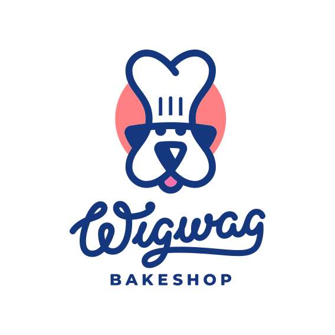
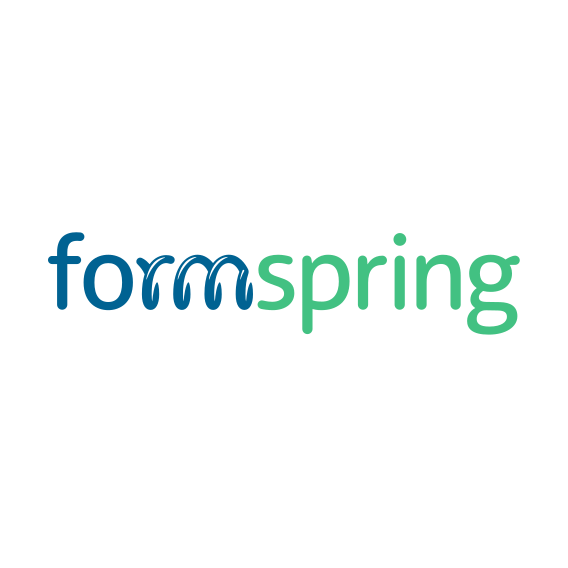
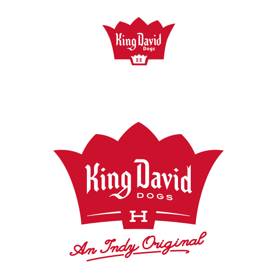

Various Clients
Brand identity and guidelines
Before moving into product UX/UI design systems, I spent many years as a multi-disciplinary designer working for various design agencies. Here are a few examples of brand identity work I created along the way.
Miscellaneous logo design
Examples of logo design from throughout my career, including many pictorial marks and bespoke typography logotypes.





